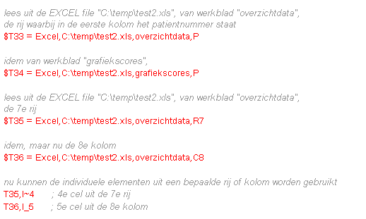
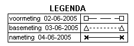
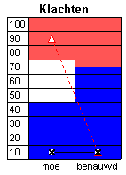
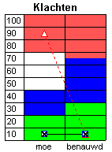

september, 2005
Rapport, Scripttaal
Inleiding Script-taal
In onderstaande beschrijvinging worden de volgende notaties gebruikt:
Commandos zijn tekstregels, opgemaakt in tekststijl 12 ("uni"). Alle commandos zijn case-ongevoelig, d.w.z. dat het niet uitmaakt of er hoofdletters danwel kleine letters worden gebruikt.
Voorlopig moet ieder commando op 1 unieke regel staan.
Titel
Ieder rapport document heeft een titel, die niet alleen boven iedere pagina (uitgezonderd de eerste pagina) staat, maar die ook in de moderne web-browsers zichtbaar is (dit ter voorbereiding op web-based EPD). De titel bestaat uit het patiënt-nummer gevolgd door de titel van het rapport-protocol. In PuntHoofd kan de titel worden gewijzigd door er op te klikken.
Op de printer, staat linksonder aan de pagina ook nog eens het patientnummer vermeld. Rechtsonder een geprinte pagina staat "page x of y". Helaas is deze tekst in het Engels en lastig te veranderen, omdat het ingebakken zit in een aangekochte component.
Variabelen
In het rapport kunnen variabelen worden gedefinieerd, zodat de betreffende grootheden op een verkorte wijze beschikbaar zijn en dus op eenvoudigere wijze en/of meerdere malen gebruikt kunnen worden.
In het algemeen geldt dat de naam van een variabele case-insensitive is, d.w.z. er wordt door de script generator geen onderscheid gemaakt tussen hoofdletters en kleine letters. Een naam moet altijd beginnen met een letter, en mag daarna ook cijfers bevatten. Gebruik nooit speciale tekens in de naam van een variabele.
Numerieke Variabelen
De definitie van een numerieke variabele begint altijd met een hekje "#".
#Variabele_test = 10
#Andere_Variabele = 2 * log10 ( Variabele_Test) + 11
String Variabelen
De definitie van een string variabele begint altijd met een hekje "$".
$Variabele_string1 = met vriendelijke groet,
Test Verwijzingen
In feite zijn dit stringvariabelen (en beginnen dus ook met een "$"), om op verkorte wijze naar een test te verwijzen. De naam van deze bijzondere variabele moet worden opgebouwd uit de letter "T" gevolgd door een uniek nummer kleiner dan 50.
$T1 = v,SIP,1 ;de eerst afgenomen SIP test
$T2 = v,SIP,0 ;de laatst afgenomen SIP test
$T3 = P,CRCN1,0 ;de laatst afgenomen Polygrafie-opname, volgens protocol CRCN1
$T35 = Excel,C:\temp\test2.xls,overzichtdata,R7 ;EXCEL import van C:\temp\test2.xls, werkblad "overzichtdata", rij=7
Deze verkorte notatie kan men vervolgens gebruiken om afzonderlijke elementen uit een test te duiden:
#Antwoord_SIP_op_vraag1 = T1, I~1
Waarna deze variabele in een formule, grafiek kan worden gebruikt, of simpelweg kan worden afgedrukt:
Antwoord_SIP_op_vraag1
Test Selectie
Het aanwijzen van de gewenste test, bestaat altijd uit 3 elementen
<testtype> , <testnaam> [ , <testnr>]
De parameters hebben de volgende betekenis
<testtype>
Het type test, hier mag altijd de volledige naam en vaak ook de afkorting worden gebruikt van het type test (V of Vragenlijst, SODA (afkorting niet toegestaan))
<testnaam>
De naam van de test, zoals SCL90, SODA_test
<testnr>
Het volgnummer van de afgenomen test. Als de waarde groter is dan 0, wordt gerefereerd aan het absolute volgnummer, bv "3" is de derde afgenomen test van het opgegeven type en de opgegeven naam. Als de waarde 0 is, wordt de laatst afgenomen test met opgegeven type en naam gerefereerd. Bij een negatieve waarde, wordt achteruit geteld, dus 0=laatste, -1=een-na-laatste, etc. Als geen waarde wordt opgegeven, wordt de waarde 0 verondersteld en wordt dus de laatst afgenomen test gebruikt.
Enkele voorbeelden:
|
V,SCL90 Vragenlijst,SCL90,0 SODA,SODA_test SODA,SODA_test,-1 |
;laatst afgenomen vragenlijst SCL90 ;laatst afgenomen vragenlijst SCL90 ;laatst afgenomen SODA test ;een-na-laatst afgenomen SODA test |
EXCEL Import
De gegevens uit bestaande Excel tabellen, kunnen als normale variabelen binnen de rapport generator worden gebruikt. Het Excel bestand dient wel aan bepaalde voorwaarden te voldoen:
Er zijn 3 mogelijkheden serie gegevens van een werkblad te halen:

Selectie van een element uit een test
Afzonderlijke elementen (antwoorden, subschalen, normscores) uit testen kunnen o.a. worden gebruikt voor het maken van grafieken.
Het eerste dat gedaan moet worden is, een verwijzing naar een test maken, middels een korte verwijzing:
$T2 = v,SIP,1 ;vanaf nu wordt "T2" geinterpreteerd als de eerst afgenomen SIP-test
$T3 = P,CRCN1,0 ;de laatst afgenomen Polygrafie-opname, volgens protocol CRCN1
Vervolgens kan men over het antwoord op een vraag, de subschaal of de norm-score beschikken:
T2,I~2 ;het antwoord op vraag2 (van de eerst afgenomen SIP test)
T2,S~MOE ;de score op de subschaal "MOE"
T2,N~SWLS~score_CSI ;de genormeerde score op "SWLS" binnen de normgroep "score-CSI"
T3,M84,1,20,I~9 ;Polygrafie Marker van funktie 84, met als eerste kolommen 1,20, en vervolgens het 9=de element
T3,Plaatje ;Het plaatje (indien aanwezig) van polygrafie opname T3
Deze afzonderlijke elementen kunnen eerst worden toegekend aan tijdelijke variabelen en dan worden gebruikt in bijvoorbeeld een grafiek
#VAR_MOE_SIP = (T2,s~MOE-8)*100/48
Grafiek_Curve1 Line_dot | Kleur1 | VAR_MOE_SIP |
Of ze kunnen rechtstreeks worden gebruikt in bijvoorbeeld een grafiek
Grafiek_Curve1 Line_dot | Kleur1 | (T2,s~MOE-8)*100/48 |
Of gewoon worden afgdrukt
#aapje = T2,M84,1,20,I~9 +13
FFFaapje ;de variabele "aapje" afdrukken in de textstyle gegeven door "FFF"
Commando Overzicht
#VAR_temp = 77 ;definitie van een numerieke variabele
$STRING_temp = met vriendelijke groeten ;definitie van een string variabele
$T2 = V,SIP,0 ;definitie van een test
Afgenomen_Testen
Patient_Gegevens
Nieuwe_Pagina
Print ;print de resultaten van een test op de klassieke wijze
Print_Grafiek ;dit commando heeft een aantal voorbereidende commandos nodig
Print_Legenda_TestData ;print grafiek legenda, volgens test-afname-data
Legenda ;print de algemene legenda (betekenis van lijn/punt type) van grafieken
Paper_Portrait ;druk gehele rapport geforceerd af in portrait orientatie
Paper_Landscape ;druk gehele rapport geforceerd af in landscape orientatie
PrintGonioGrafiek
Extra_TestGegevens = 1 ;0=geen afdruk van extra testgegevens, andere waarde is wel afdrukken
Report_Errors ;als er fouten zijn opgetreden, blijft fouten lijstje staan en kan geprint worden
De volgende commandos zijn alleen bedoeld voor testdoeleinden
$Commandos, zie Test-commandos
Debug_Print_Vars
Debug_Print_Graph
Funkties
Er zijn een aantal voorgedefinieerde funkties beschikbaar, welke gebruikt kunnen worden op nagenoeg iedere plaats waar een getal of waarde moet worden ingevuld.
#Kleur1 = RGB(255 0 0) ;Definiëer kleur1 als fel rood
Hiermee kan een kleur worden gedefiniëerd, door de waarden voor de afzonderlijke kleuren R=Rood, G=Groen en B=Blauw op te geven. De waarde voor iedere kleur moet liggen tussen de 0 en 255. In nagenoeg iedere willekeurige kleuren-dialoog (van ieder willekeurig programma), worden deze getallen weergegeven. Deze funktie is met name handig op de juiste kleur van grafieken te definiëren.
Commando AFGENOMEN_TESTEN
Met dit commando wordt een overzicht van de afgenomen testen bij deze patient opgenomen in het rapport.
De algemene vorm van het commando is
AFGENOMEN_TESTEN [,<aantal>]
De parameter <aantal> mag worden weggelaten in welk geval alle afgenomen testen worden weergegeven.
<aantal>
geeft het maximaal aantal testen dat moet worden opgenomen in het overzicht. Uiteraard worden altijd de laatste <aantal> testen weergegeven.
Commando PATIENT_GEGEVENS
Met dit commando worden de vaste patientgegevens opgenomen in het rapport. Deze gegevens worden vooralsnog in een vast formaat weergegeven. Wel kan worden aangegeven of een afdruk van de patient-foto gewenst is of niet.
Patient_Gegevens ;patientgegevens zonder foto en extra patientgegevens
Patient_Gegevens,0 ;zonder extra testgegevens, zonder foto
Patient_Gegevens,1 ;zonder extra testgegevens, met foto
Patient_Gegevens,2 ;met extra testgegevens, zonder foto
Patient_Gegevens,3 ;met extra testgegevens, met foto
X X X X_X 2 1 0
| | |__ als 1 dan foto afdrukken
| |____ als 1 dan extra patientparameters
|______ als 1 dan extra patient text
Patient_Gegevens,0 ; -patientparameters, -foto, -extra patient tekst
Patient_Gegevens,1 ; -patientparameters, +foto, -extra patient tekst
Patient_Gegevens,2 ; +patientparameters, -foto, -extra patient tekst
Patient_Gegevens,3 ; +patientparameters, +foto, -extra patient tekst
Patient_Gegevens,4 ; -patientparameters, -foto, +extra patient tekst
Patient_Gegevens,5 ; -patientparameters, +foto, +extra patient tekst
Patient_Gegevens,6 ; +patientparameters, -foto, +extra patient tekst
Patient_Gegevens,7 ; +patientparameters, +foto, +extra patient tekst
Commando PRINT
Met het commando PRINT, kan een deel-rapport van iedere module (oftewel een testuitkomst rapporteren op de klassieke wijze) worden aangemaakt.
De algemene vorm van het PRINT commando is:
PRINT [,<rapportlevel>] <testtype> , <testnaam> [, <testnr>]
De parameters <rapportlevel> en <testnr> mogen worden weggelaten.
<rapportlevel>
geeft het detailnivo aan, waarop het deelrapport wordt aangemaakt. De waarde moet liggen in het bereik 1..6, waarbij geldt dat 1=samenvatting, 2=antwoorden, 3=vragen+antwoorden, .... Als geen waarde is gespecificeerd, wordt rapportlevel=1 verondersteld.
<testnr>
geeft het volgnummer van de test aan. Default = 0 is de laatst afgenomen test, een postieve waarde geeft de "zoveelste" test aan, een negatief getal geeft "zoveelste" geteld vanaf het einde (dus -1 = de een-na-laatste test).
Commando PRINT_LEGENDA_TESTDATA
Dit kommando, print volledig automatisch de legenda van de grafieken, gebaseerd op de data van de test-afnamen.
Print_Legenda_TestData

In bovenstaand voorbeeld, hebben er dus op 3 data testafname plaatsgevonden, en wordt de omschrijving van de eerste test op een beaaplde datum toegevoegd aan de legenda.
Commando PRINT_GRAFIEK
Met dit commando kan een grafiek worden geprint. De grafiek kan worden gedefinieerd door constanten, antwoorden op vragen, subschaal-waarden, genormeerde scores, of zelfs allerlei ingewikkelde formules gebasseerd op deze variabelen.
Voor het maken van een grafiek worden eerst alle gegevens, zoals kop- en voet-titels, teksten bij de assen en natuurlijk de af te drukken gegevens opgegeven, waarna door het commando Print_Grafiek de grafiek daadwerkelijk in het rapport wordt opgenomen.
Eerst een kompleet voorbeeld, waarna zal worden ingegaan op de afzonderlijke commandos.
=====================================================================
BEPERKINGEN GRAFIEK
=====================================================================
#Grafiek_Schaal = 1.2
Grafiek_Titel_Boven Beperkingen
Grafiek_Titel_Onder geen tekst
Grafiek_X_As | thuis | lopen
Grafiek_Y_As 10 | 20 | 30 | 40 | 50 | 60 | 70 | 80 | 90 | 100
Grafiek_Curve4 SolidBottom | kleur5 | 55 | 45
Grafiek_Curve5 SolidTop | kleur4 | 55 | 45
Grafiek_Curve1 Line_dot | Kleur1 | T3,s~THUIS | T3,s~LOPEN
Grafiek_Curve2 Line_dash | Kleur2 | T13,s~THUIS | T13,s~LOPEN
Grafiek_Curve3 Line_solid | Kleur3 | T23,s~THUIS | T23,s~LOPEN
Print_Grafiek | |
=====================================================================
Normaal gesproken is de schaling van de grafiek 1.0, hetgeen betekent dat hetzelfde font in de grafiek wordt gebruikt als het hoofdfont in het document. Men kan echter de grafieken groter of kleiner afdrukken, door de schaling op te geven. Dit hoeft slechts eenmalig te gebeuren en geldt dan voor alle volgende grafieken.
#Grafiek_Schaling = 1.0 ;standaard grootte
#Grafiek_Schaling = 1.5 ;grafiek 50% groter afdrukken
#Grafiek_Schaling = 0.8 ;grafiek 20% kleiner afdrukken
Zowel onder als boven de grafiek kan een tekst worden geplaatst. Indien de titels niet worden opgegeven, worden er ook geen titels geplaatst.
Grafiek_Titel_Boven <tekst>
Grafiek_Titel_Onder <tekst>
Het definieren van de as labels gaat als volgt. De as-labels worden gescheiden door vertikale streepjes. Indien tussen 2 vertikale streepjes geen tekst staat, wordt er hier dus ook geen as-label neergeschreven. In onderstaand voorbeeld ontbreekt dus ook het eerste label van de X-as, dit is namelijk onzinnig, omdat dit de positie van de Y-as is. In de Y-as ontbreekt in onderstaand voorbeeld het tweede label. Ieder afzonderlijk as-label kan uit meerdere regels bestaan, door op de plaast waar een regelscheiding moet komen een "\n" te plaatsen.
Grafiek_X_As | <tekst> | <tekst>
Grafiek_Y_As <tekst> | | <tekst> |
Het definieren van de feitelijke curven (er kunnen maximaal 10 curven in 1 grafiek worden afgebeeld). Het lijntype en de kleuren kunnen het beste vooraan in het programma als variabele worden gedefinieerd.
Grafiek_Curve1 <line-type> | <Kleur> | <waarde1> | <waarde2>
Er zijn enkele bijzondere lijntypes, waarmee de achtergrond kleur van (een deel) van de grafiek kan worden ingekleurd. Dit gebeurt door als lijntype "SolidBottom" of "SolidTop" te kiezen. Hier een voorbeeld van een resultaat

De curve SolidBottom vult een vlak vanaf de bodem tot aan de opgegeven waarden. Men kan zelfs meerdere kleurvlakken over elkaar heen positioneren, maar men moet dan goed op de volgorde letten. Stel we willen in bovenstaand voorbeeld het gebied moe,0..20 en het gebied benauwd,0..30 groen kleuren dan kan dat gerealiseerd worden door een grafiek met solidbottom erover heen te tekenen (hiertoe moet de groen grafiek een hoger nummer hebben dan de blauwe grafiek:
Grafiek_Curve6 SolidBottom | $00FF00 | 20 | 30
En het resultaat ziet er dan als volgt uit

Het feitelijk afdrukken van de grafiek gebeurt ten slotte met het commando print_grafiek:
Print_Grafiek | |
Grafieken worden zoveel mogelijk aaneengesloten geprint, om een scheiding tussen grafieken te realiseren, kan een aantal spaties (of tekst) worden geplaatst tussen de 2 vertikale streepjes van het Print_Grafiek commando.
Wil men de volgende grafiek op een nieuwe regel plaatsen, dan moet men in één van de gewonde tekststijlen een (lege) regel invoegen.
Commando PRINTGONIOGRAFIEK
Met dit commando, kan een goniometer meting grafisch worden opgenomen in het rapport. De gegevens kunnen zowel absoluut (dus alleen de meting zelf), danwel relatief (vergelijking tussen 2 metingen) worden weergegeven.
De algemene vorm van het commando is:
PrintGonioGrafiek [,<meting-1> [,<meting-2>] ]
De parameters <meting-1> en <meting-2> mogen worden weggelaten.
Als <meting-2> ontbreekt, wordt een meting absoluut weergegeven.
Als <meting-2> aanwezig is, wordt de verbetering van <meting-1> t.o.v. <meting-2> weergegeven.
Als <meting-1> ontbreekt, wordt de defaultwaarde 0 veronderstelt en dus een absolute weergave van de laatste meting.
Enkele voorbeelden (absolute weergave):
|
PrintGonioGrafiek PrintGonioGrafiek,0 PrintGonioGrafiek,-1 PrintGonioGrafiek,3 |
;grafische weergave laatst afgenomen goniometer meting ;grafische weergave laatst afgenomen goniometer meting ;grafische weergave een-na-laatste afgenomen goniometer meting ;grafische weergave derde afgenomen goniometer meting |
Enkele voorbeelden (relatieve weergave):
|
PrintGonioGrafiek,0,-1 PrintGonioGrafiek,0,-2 PrintGonioGrafiek,-1,-2 PrintGonioGrafiek,3,4 |
;grafische weergave, verbetering laatste goniometing t.o.v. een-na-laatste ;grafische weergave, verbetering laatste goniometing t.o.v. twee-na-laatste ;verbetering een-na-laatste goniometing t.o.v. twee-na-laatste ;grafische weergave, verbetering derde goniometing t.o.v. vierde |
Diskussie:
In bovenstaande voorbeelden zijn de hoeken in graden, waarbij gestrekt 0 graden is.
Gaarne alle commentaar die je maar kunt verzinnen.
De volgende punten, heb ik nog vraagtekens bij
PuntHoofd Test-commandos
Om een rapport-template (in PuntHoofd) te kunnen testen (met een vaste set gegevens), zijn een aantal commando's toegevoegd, zodat parameters gedefininiëerd kunnen worden, die normaal gesproken in de TestOrganizer reeds bekend zijn (zoals patientnummer). Deze parameter definities beginnen allemaal met een "$"-teken, waardoor ze gewoon in het template kunnen blijven staan, omdat de normale rapport-generator de regels die beginnen met een "$" zal negeren.
Hieronder zijn alle test-commando's weergegeven als een voorbeeld (de betekenis van de verschillende commandos wordt als vanzelf sprekend verondersteld):
$TestOrganizer_ProgPath = D:\data_TO_exe\ ;
$TestOrganizer_ProtocolPath = D:\d_midorg\protocol\ ;
$patient = D:\d_midorg\mid-data\patient\0000002.pat;
Wijzigingen 14-oktober-2006
Wijzigingen 31-oktober-2005
Verbeteringen 22-september-2005
Verbeteringen 16-september-2005
Verbeteringen 6-september-2005
in de tekst nog te wijzigen
T2,S~MOE ;de score op de subschaal "MOE"
T2,S~MOE% ;de relatieve score op de subschaal "MOE"
T2,N~SWLS~score_CSI ;de genormeerde score op "SWLS" binnen de normgroep "score-CSI"
T2,N~SWLS%~score_CSI ;de genormeerde relatieve score op "SWLS" binnen de normgroep "score-CSI"
Verbeteringen 5-juli-2005
Verbeteringen juni 2005